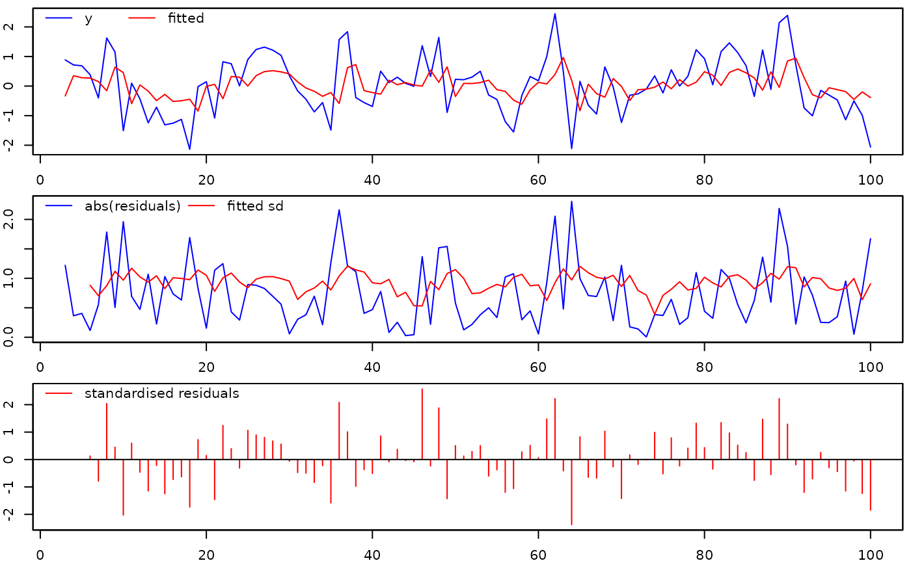
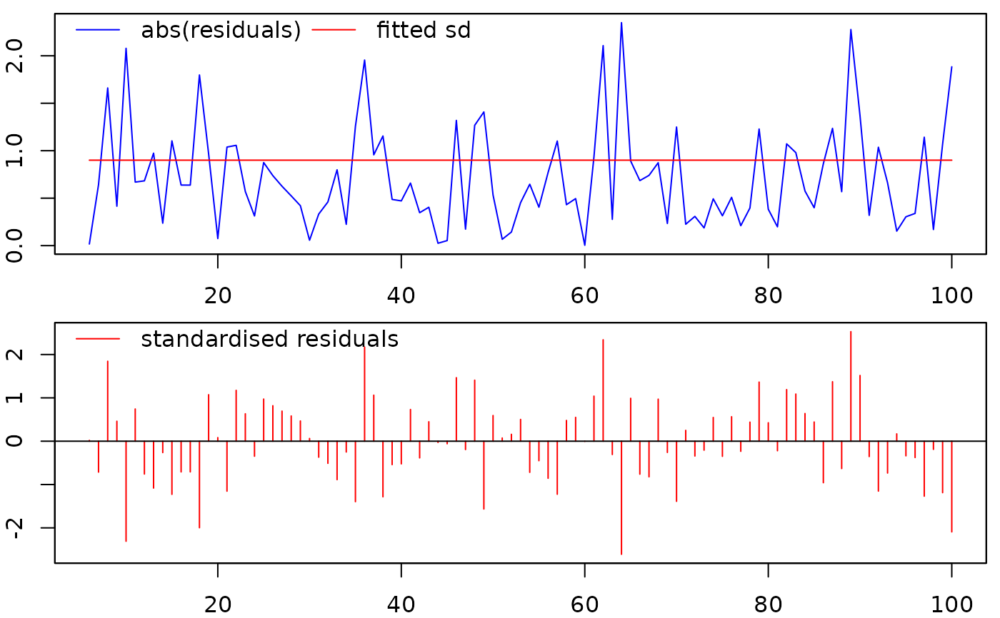
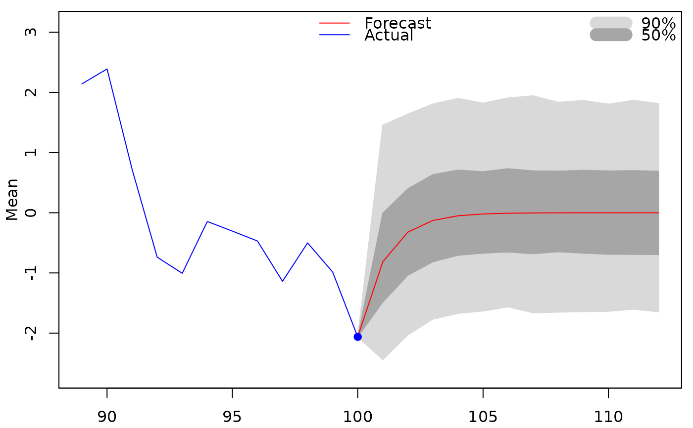

Extraction functions for 'gets' objects
coef.gets.RdExtraction functions for objects of class 'gets'
Usage
# S3 method for class 'gets'
coef(object, spec=NULL, ...)
# S3 method for class 'gets'
fitted(object, spec=NULL, ...)
# S3 method for class 'gets'
logLik(object, ...)
# S3 method for class 'gets'
plot(x, spec=NULL, col=c("red","blue"),
lty=c("solid","solid"), lwd=c(1,1), ...)
# S3 method for class 'gets'
predict(object, spec=NULL, n.ahead=12, newmxreg=NULL,
newvxreg=NULL, newindex=NULL, n.sim=5000, innov=NULL, probs=NULL,
ci.levels=NULL, quantile.type=7, return=TRUE, verbose=FALSE, plot=NULL,
plot.options=list(), ...)
# S3 method for class 'gets'
print(x, signif.stars=TRUE, ...)
# S3 method for class 'gets'
residuals(object, std=NULL, ...)
# S3 method for class 'gets'
sigma(object, ...)
# S3 method for class 'gets'
summary(object, ...)
# S3 method for class 'gets'
vcov(object, spec=NULL, ...)Arguments
- object
an object of class 'gets'
- x
an object of class 'gets'
- spec
NULL, "mean", "variance" or, in some instances, "both". When
NULLis a valid value, then it is automatically determined whether information pertaining to the mean or variance specification should be returned- signif.stars
logical. IfTRUE, then p-values are additionally encoded visually, seeprintCoefmat- std
logical. IfFALSE(default), then the mean residuals are returned. If TRUE, then the standardised residuals are returned- n.ahead
integerthat determines how many steps ahead predictions should be generated (the default is 12)- newmxreg
a
matrixofn.aheadrows andNCOL(mxreg)columns with the out-of-sample values of themxregregressors- newvxreg
a
matrixofn.aheadrows andNCOL(vxreg)columns with the out-of-sample values of thevxregregressors- newindex
NULL(default) or the date-index for thezooobject returned bypredict.arx. IfNULL, then the function uses the in-sampleindexto generate the out-of-sample index- n.sim
integer, the number of replications used for the generation of the forecasts- innov
NULL(default) or a vector of lengthn.ahead * n.simcontaining the standardised errors (that is, zero mean and unit variance) used for the forecast simulations. IfNULL, then a classica bootstrap procedure is used to draw from the standardised in-sample residuals- probs
NULL(default) or avectorwith the quantile-levels (values strictly between 0 and 1) of the forecast distribution. IfNULL, then no quantiles are returned unlessci.levelsis non-NULL- ci.levels
NULL(default) or avectorwith the confidence levels (expressed as values strictly between 0 and 1) of the forecast distribution. The upper and lower values of the confidence interval(s) are returned as quantiles- quantile.type
an integer between 1 and 9 that selects which algorithm to be used in computing the quantiles, see the argument
typeinquantile- return
logical. IfTRUE(default), then the out-of-sample predictions are returned. The valueFALSE, which does not return the predictions, may be of interest if only a prediction plot is of interest- verbose
logicalwith defaultFALSE. IfTRUE, then additional information (typically the quantiles and/or the simulated series) used in the generation of forecasts is returned. IfFALSE, then only the forecasts are returned- plot
NULL(default) or logical. IfNULL, then the value set byoptions$plot(seeoptions) determines whether a plot is produced or not. IfTRUE, then the out-of-sample forecasts are plotted.- plot.options
a
listof options related to the plotting of forecasts, see 'Details'- col
colours of fitted (default=red) and actual (default=blue) lines
- lty
types of fitted (default=solid) and actual (default=solid) lines
- lwd
widths of fitted (default=1) and actual (default=1) lines
- ...
additional arguments
Details
The plot.options argument is a list that controls the prediction plot, see 'Details' in predict.arx
Value
- coef:
a numeric vector containing parameter estimates
- fitted:
a
zooobject with fitted values- logLik:
a numeric, the log-likelihood (normal density)
- plot:
a plot of the fitted values and the residuals
- predict:
a
vectorof classzoocontaining the out-of-sample forecasts, or amatrixof classzoocontaining the out-of-sample forecasts together with prediction-quantiles, or - ifreturn=FALSE-NULL- print:
a print of the estimation results
- residuals:
a
zooobject with the residuals- sigma:
the regression standard error ('SE of regression')
- summary:
a print of the items in the
getsobject- vcov:
a variance-covariance matrix
Author
Felix Pretis, https://felixpretis.climateeconometrics.org/
James Reade, https://sites.google.com/site/jjamesreade/
Moritz Schwarz, https://www.inet.ox.ac.uk/people/moritz-schwarz
Genaro Sucarrat, https://www.sucarrat.net/
Examples
##Simulate from an AR(1):
set.seed(123)
y <- arima.sim(list(ar=0.4), 100)
##Simulate four independent Gaussian regressors:
xregs <- matrix(rnorm(4*100), 100, 4)
##estimate an AR(2) with intercept and four conditioning
##regressors in the mean, and a log-ARCH(3) in the variance:
mymod <- arx(y, mc=TRUE, ar=1:2, mxreg=xregs, arch=1:3)
##General-to-Specific (GETS) model selection of the mean:
meanmod <- getsm(mymod)
#>
#> GUM mean equation:
#>
#> reg.no. keep coef std.error t-stat p-value
#> mconst 1 0 0.043088 0.094883 0.4541 0.6508240
#> ar1 2 0 0.406777 0.107385 3.7880 0.0002723 ***
#> ar2 3 0 -0.014965 0.110010 -0.1360 0.8920956
#> mxreg1 4 0 -0.071650 0.096881 -0.7396 0.4614659
#> mxreg2 5 0 -0.043913 0.101653 -0.4320 0.6667745
#> mxreg3 6 0 -0.033421 0.095433 -0.3502 0.7269975
#> mxreg4 7 0 -0.079345 0.094225 -0.8421 0.4019547
#> ---
#> Signif. codes: 0 ‘***’ 0.001 ‘**’ 0.01 ‘*’ 0.05 ‘.’ 0.1 ‘ ’ 1
#>
#> GUM log-variance equation:
#>
#> coef std.error t-stat p-value
#> vconst -0.185723 0.339150 0.2999 0.5840
#> arch1 0.071754 0.105315 0.6813 0.4974
#> arch2 -0.091189 0.105499 -0.8644 0.3897
#> arch3 0.052295 0.105789 0.4943 0.6223
#>
#> Diagnostics:
#>
#> Chi-sq df p-value
#> Ljung-Box AR(3) 2.9699 3 0.39629
#> Ljung-Box ARCH(4) 4.3880 4 0.35603
#>
#> 6 path(s) to search
#> Searching:
#> 1
#> 2
#> 3
#> 4
#> 5
#> 6
#>
#> Path 1: 1 3 6 5 4 7
#> Path 2: 3 6 5 1 4 7
#> Path 3: 4 3 6 5 1 7
#> Path 4: 5 3 6 1 4 7
#> Path 5: 6 3 5 1 4 7
#> Path 6: 7 3 6 1 5 4
#>
#> Terminal models:
#>
#> info(sc) logl n k
#> spec 1 (1-cut): 2.616031 -125.893 98 1
#>
#> Retained regressors (final model):
#>
#> ar1
##General-to-Specific (GETS) model selection of the variance:
varmod <- getsv(mymod)
#> GUM log-variance equation:
#>
#> reg.no. keep coef std.error t-stat p-value
#> vconst 1 1 -0.185723 0.339150 0.2999 0.5840
#> arch1 2 0 0.071754 0.105315 0.6813 0.4974
#> arch2 3 0 -0.091189 0.105499 -0.8644 0.3897
#> arch3 4 0 0.052295 0.105789 0.4943 0.6223
#>
#> Diagnostics:
#>
#> Chi-sq df p-value
#> Ljung-Box AR(3) 2.9699 3 0.39629
#> Ljung-Box ARCH(4) 4.3880 4 0.35603
#>
#> 3 path(s) to search
#> Searching:
#> 1
#> 2
#> 3
#>
#> Path 1: 2 4 3
#> Path 2: 3 4 2
#> Path 3: 4 2 3
#>
#> Terminal models:
#>
#> info(sc) logl n k
#> spec 1 (1-cut): 2.675753 -124.8213 95 1
#>
#> Retained regressors (final model):
#>
#> vconst
##print results:
print(meanmod)
#>
#> Date: Wed Apr 2 12:57:37 2025
#> Dependent var.: y
#> Method: Ordinary Least Squares (OLS)
#> Variance-Covariance: Ordinary
#> No. of observations (mean eq.): 98
#> Sample: 3 to 100
#>
#> SPECIFIC mean equation:
#>
#> coef std.error t-stat p-value
#> ar1 0.395234 0.095397 4.143 7.328e-05 ***
#> ---
#> Signif. codes: 0 ‘***’ 0.001 ‘**’ 0.01 ‘*’ 0.05 ‘.’ 0.1 ‘ ’ 1
#>
#> SPECIFIC log-variance equation:
#>
#> coef std.error t-stat p-value
#> vconst 0.132172 0.314689 0.1764 0.6745
#> arch1 0.168115 0.105649 1.5913 0.1150
#> arch2 0.041319 0.107019 0.3861 0.7003
#> arch3 0.012057 0.108241 0.1114 0.9116
#>
#> Diagnostics and fit:
#>
#> Chi-sq df p-value
#> Ljung-Box AR(3) 2.4359 3 0.4870
#> Ljung-Box ARCH(4) 6.6894 4 0.1532
#>
#> SE of regression 0.90884
#> R-squared 0.14564
#> Log-lik.(n=95) -125.89303
print(varmod)
#>
#> Date: Wed Apr 2 12:57:37 2025
#> Method: Ordinary Least Squares (OLS)
#> No. of observations (variance eq.): 95
#> Sample: 6 to 100
#>
#> SPECIFIC log-variance equation:
#>
#> coef std.error t-stat p-value
#> vconst -0.21006 0.21965 0.9146 0.3389
#>
#> Diagnostics and fit:
#>
#> Chi-sq df p-value
#> Ljung-Box AR(3) 3.9427 3 0.2677
#> Ljung-Box ARCH(4) 5.2478 4 0.2628
#>
#> SE of regression 0.9003
#> Log-lik.(n=95) -124.8213
##plot the fitted vs. actual values, and the residuals:
plot(meanmod)

plot(varmod)

##generate and plot predictions of the mean:
predict(meanmod, plot=TRUE)

#> 101 102 103 104 105
#> -8.149836e-01 -3.221089e-01 -1.273082e-01 -5.031648e-02 -1.988676e-02
#> 106 107 108 109 110
#> -7.859914e-03 -3.106501e-03 -1.227793e-03 -4.852651e-04 -1.917931e-04
#> 111 112
#> -7.580305e-05 -2.995991e-05
##print the entries of object 'gets':
summary(meanmod)
#> Length Class Mode
#> date 1 -none- character
#> gets.type 1 -none- character
#> time.started 1 -none- character
#> time.finished 1 -none- character
#> call 2 -none- call
#> gum.mean 6 data.frame list
#> gum.variance 4 data.frame list
#> gum.diagnostics 6 -none- numeric
#> no.of.estimations 1 -none- numeric
#> paths 6 -none- list
#> terminals 1 -none- list
#> terminals.results 4 -none- numeric
#> best.terminal 1 -none- numeric
#> specific.spec 1 -none- numeric
#> version 1 -none- character
#> aux 20 -none- list
#> n 1 -none- numeric
#> k 1 -none- numeric
#> df 1 -none- numeric
#> coefficients 1 -none- numeric
#> mean.fit 98 zoo numeric
#> residuals 98 zoo numeric
#> rss 1 -none- numeric
#> sigma2 1 -none- numeric
#> vcov.mean 1 -none- numeric
#> logl 1 -none- numeric
#> Elnz2 1 -none- numeric
#> vcov.var 9 -none- numeric
#> var.fit 98 zoo numeric
#> std.residuals 98 zoo numeric
#> ustar.residuals 98 zoo numeric
#> variance.results 4 data.frame list
#> mean.results 4 data.frame list
#> specific.diagnostics 6 -none- numeric
summary(varmod)
#> Length Class Mode
#> date 1 -none- character
#> gets.type 1 -none- character
#> time.started 1 -none- character
#> time.finished 1 -none- character
#> call 2 -none- call
#> gum.mean 4 data.frame list
#> gum.variance 6 data.frame list
#> gum.diagnostics 6 -none- numeric
#> no.of.estimations 1 -none- numeric
#> paths 3 -none- list
#> terminals 1 -none- list
#> terminals.results 4 -none- numeric
#> best.terminal 1 -none- numeric
#> specific.spec 1 -none- numeric
#> version 1 -none- character
#> aux 17 -none- list
#> n 1 -none- numeric
#> k 1 -none- numeric
#> df 1 -none- numeric
#> mean.fit 95 zoo numeric
#> residuals 95 zoo numeric
#> rss 1 -none- numeric
#> sigma2 1 -none- numeric
#> logl 1 -none- numeric
#> Elnz2 1 -none- numeric
#> vcov.var 0 -none- numeric
#> var.fit 95 zoo numeric
#> std.residuals 95 zoo numeric
#> ustar.residuals 95 zoo numeric
#> variance.results 4 data.frame list
#> specific.diagnostics 6 -none- numeric
##extract coefficients of the simplified (specific) model:
coef(meanmod) #mean spec
#> ar1
#> 0.3952335
coef(varmod) #variance spec
#> vconst Elnz2
#> -0.210060 -1.178012
##extract log-likelihood:
logLik(mymod)
#> 'log Lik.' -123.8917 (df=7)
##extract coefficient-covariance matrix of simplified
##(specific) model:
vcov(meanmod) #mean spec
#> ar1
#> ar1 0.009100632
vcov(varmod) #variance spec
#> <0 x 0 matrix>
##extract and plot the fitted values:
mfit <- fitted(meanmod) #mean fit
plot(mfit)
vfit <- fitted(varmod) #variance fit
plot(vfit)
##extract and plot residuals:
epshat <- residuals(meanmod)
plot(epshat)
##extract and plot standardised residuals:
zhat <- residuals(varmod)
plot(zhat)